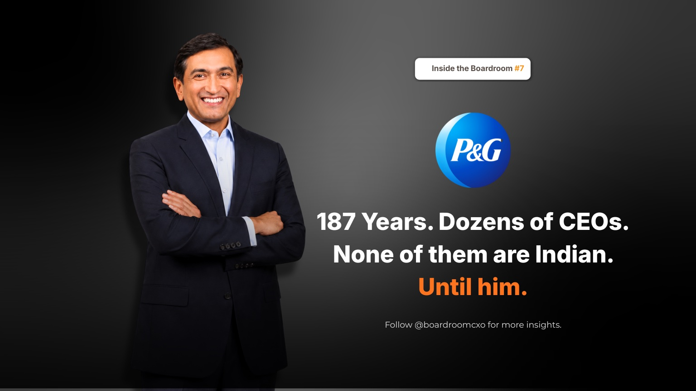

187 years. Dozens of CEOs. Not one of them Indian, until a boy from Mumbai who joined the company fresh out of business school, and never left, walked into the top job.
On January 1, 2026, Shailesh Jejurikar became CEO of Procter & Gamble, the first person of Indian origin to lead it in nearly two centuries. P&G reaches an estimated 5 billion people across more than 180 countries. He joined the company in 1989, straight out of IIM Lucknow, as an assistant brand manager in India. Then something unusual happened: nothing else happened. He never switched employers again.
Who Is Shailesh Jejurikar?
Shailesh Jejurikar is P&G's CEO, appointed effective January 1, 2026, after 36 years at the company, all of them inside the same organization. In an era where managers typically change employers every two or three years to climb faster, he did the exact opposite. And he did it the hard way: while others chased comfortable postings, he kept raising his hand for the difficult ones, East Africa, Korea, Singapore, running detergent brands in markets that rarely make a global headline. Each move was a quiet bet on discomfort over ease.
By 2019 he was running P&G's single biggest business, Global Fabric and Home Care, a roughly $30 billion portfolio holding Tide, Ariel, and Downy. He backed innovations like Tide Pods and caught consumer shifts others missed, including a move toward smaller, more frequent dishwashing batches instead of full loads. In 2021, he became Chief Operating Officer, the seat that typically precedes the top job.
What His Career Says About How P&G Actually Picks a CEO
The obvious read on this appointment is representation: the first Indian-origin CEO of a 187-year-old American consumer giant. The more useful read for anyone hiring senior leaders is different. P&G did not hand its largest, most political business unit and then the top job to someone who optimized for visibility. It handed them to someone whose résumé is a list of markets other people avoided.
On the hardest part of consumer leadership, Jejurikar has said it is "understanding articulated and unarticulated needs…get that right, and everything follows." That is not a line about strategy decks. It is a line about the kind of pattern recognition that only gets built by running unglamorous categories in unglamorous markets long enough to see what consumers actually do, not what they say in a focus group.
The world rewards those who leave to grow. He proved the bigger bet can be staying.
Common Mistakes Boards Make When Reading a Long-Tenure Candidate
Boards and search committees evaluating a candidate with one long tenure tend to make three errors.
They read long tenure as a lack of ambition or optionality, rather than checking what that tenure actually contained. Thirty-six years at one employer looks identical on a résumé whether it was thirty-six years of comfortable, low-risk postings or thirty-six years of the hardest assignments on offer. The difference only shows up when you ask what markets, what categories, and what condition the business was in when they took it over.
They overweight the foreign-degree, marquee-market signal and underweight operators who built range in markets the rest of the organization treats as a detour. Jejurikar's path ran through East Africa and Korea, not the postings that usually get internal buzz, and that is exactly what built the operating range the board eventually needed.
They evaluate P&L size without asking what was inherited versus built. Running a $30 billion unit is a fact. Whether the leader grew it, defended it, or simply held the seat is the question that actually predicts what they will do with a bigger mandate.
A Framework for Spotting This Kind of Leader Earlier
When boards brief us on a CXO search, a long single-employer tenure gets three specific checks before it is treated as a strength.
- Map the postings, not just the titles. A leader who chose difficult markets and categories repeatedly, over decades, has a decision pattern worth more than the title on their final role.
- Ask what consumer shift they caught before it showed up in the data. Jejurikar's read on smaller, more frequent dishwashing batches is the kind of ground-level pattern recognition that separates operators from administrators. Push candidates for a specific example, not a general claim of "consumer insight."
- Test whether their tenure was compounding or repeating. One long employer can mean thirty-six years of the same year repeated, or thirty-six years of expanding scope. The postings and the P&L history tell you which.
Why This Belongs in the Boardroom, Not Just the Business Pages
We wrote recently about Sudhir Sitapati's decision to leave HUL's safest seat for a smaller, messier Godrej Consumer, a bet that conviction and judgment travel with the person, not the institution. Jejurikar's story is the mirror image of that same lesson: staying inside one institution for thirty-six years, deliberately choosing its hardest assignments, can build exactly the same range that switching companies is usually assumed to require.
Both stories point to the same hiring problem. The market does not reward the flashiest career path or the most conventional one. It rewards boards that can read what a candidate actually did with the postings they were given, whichever direction that career moved.
Frequently Asked Questions
Who is Shailesh Jejurikar?
Shailesh Jejurikar is the CEO of Procter & Gamble, appointed effective January 1, 2026. He joined P&G in 1989 straight out of IIM Lucknow as an assistant brand manager in India and spent his entire 36-year career at the company, rising through fabric and home care leadership roles in East Africa, Korea, and Singapore before becoming Chief Operating Officer in 2021.
Why is Shailesh Jejurikar's appointment as P&G CEO significant?
Shailesh Jejurikar is the first person of Indian origin to lead Procter & Gamble in the company's nearly 187-year history. P&G reaches an estimated 5 billion consumers across more than 180 countries, making the appointment one of the most significant leadership milestones for Indian-origin executives in global consumer goods.
What did Shailesh Jejurikar run before becoming P&G CEO?
Before becoming CEO, Shailesh Jejurikar ran P&G's largest business unit, Global Fabric and Home Care, a roughly $30 billion portfolio that includes Tide, Ariel, and Downy, starting in 2019. He became P&G's Chief Operating Officer in 2021.
What markets did Shailesh Jejurikar work in during his career at P&G?
Shailesh Jejurikar took on postings in East Africa, Korea, and Singapore, largely running detergent and fabric care brands in markets that rarely generate global headlines, before being handed P&G's biggest business unit.
Why did Shailesh Jejurikar stay at one company for 36 years?
Shailesh Jejurikar joined P&G in 1989 and never switched employers, an unusual path in an era where managers typically change companies every two to three years to climb faster. He instead raised his hand for difficult postings and product categories inside the same organization, a pattern that ultimately built the operating range P&G's board chose for the top job.
Related Reading
Sudhir Sitapati: Why He Left HUL's Safest Seat for Godrej
Read → R · 02 Founder Leadership · July 2026Sanjiv Mehta: The HUL Leader Who Never Forgot Bhopal
Read → R · 03 Founder Leadership · July 2026Suresh Narayanan: The MD Who Walked Into the Maggi Ban
Read →Looking for a leader with the range, not just the résumé?
We map what a candidate actually did with the postings they were given, not just the titles they collected. Brief us on your next CXO mandate and we will tell you what the market actually has to offer.
Brief Us on a Mandate